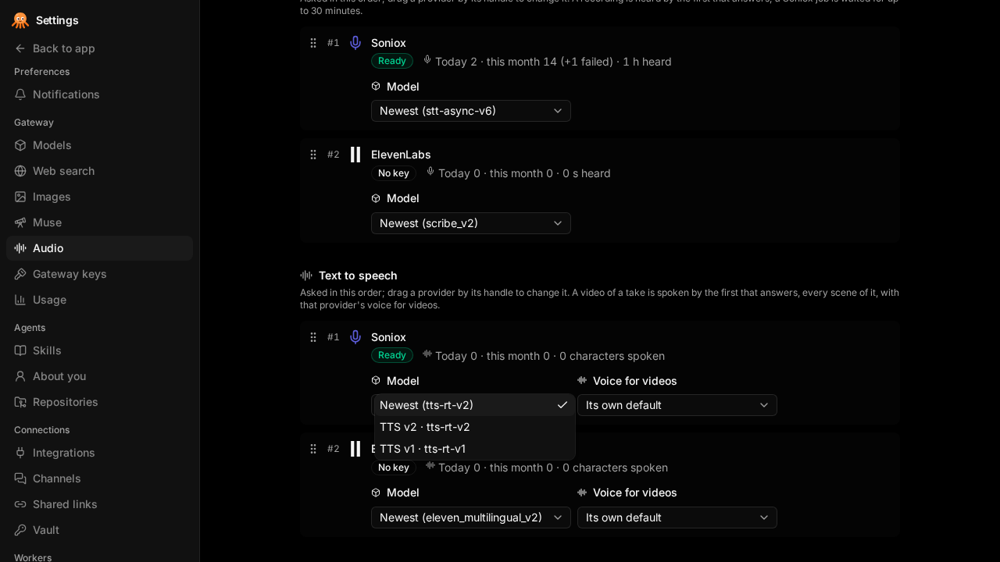
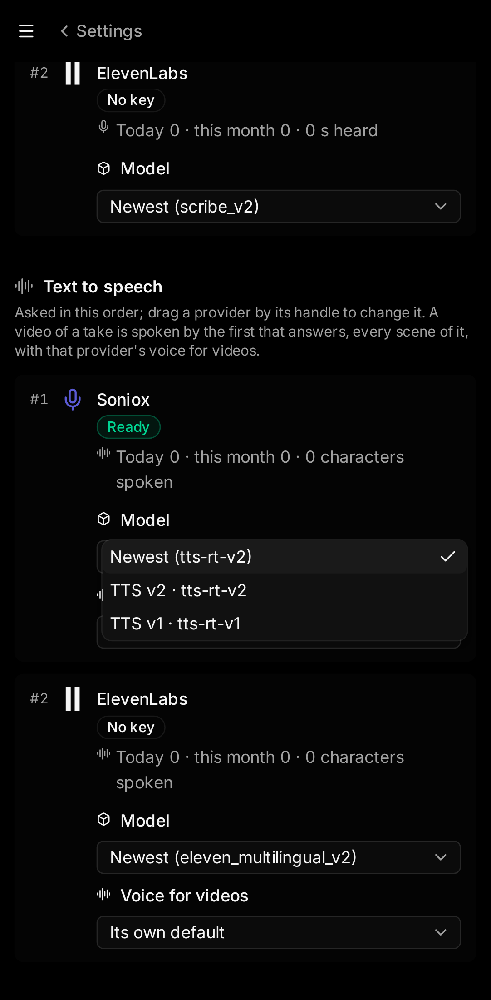
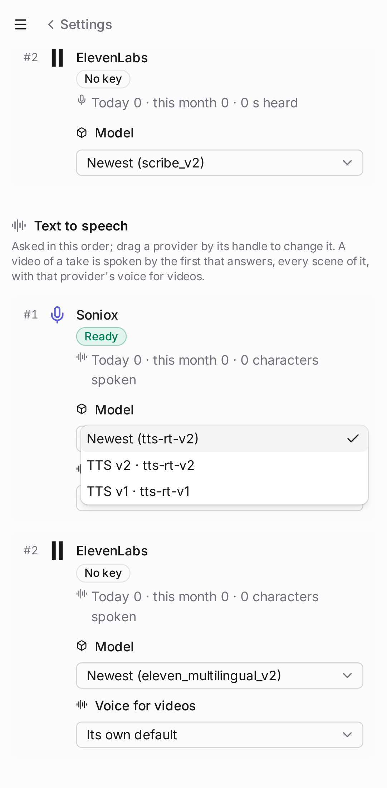
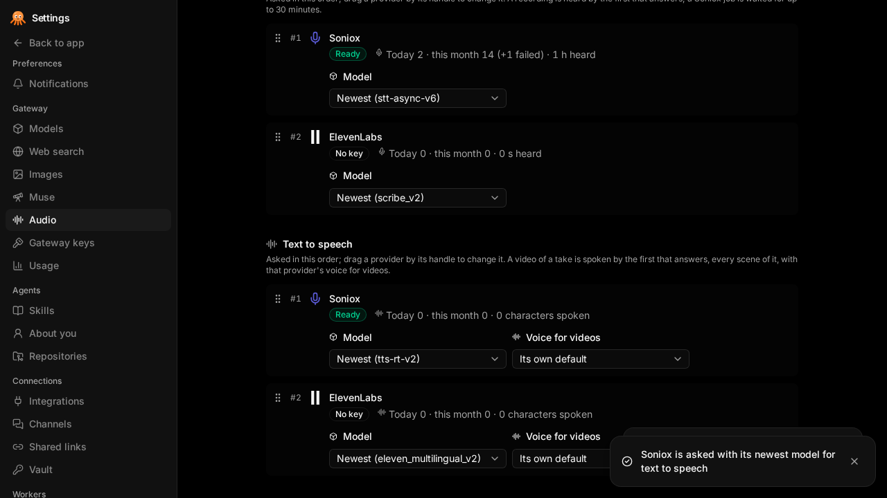
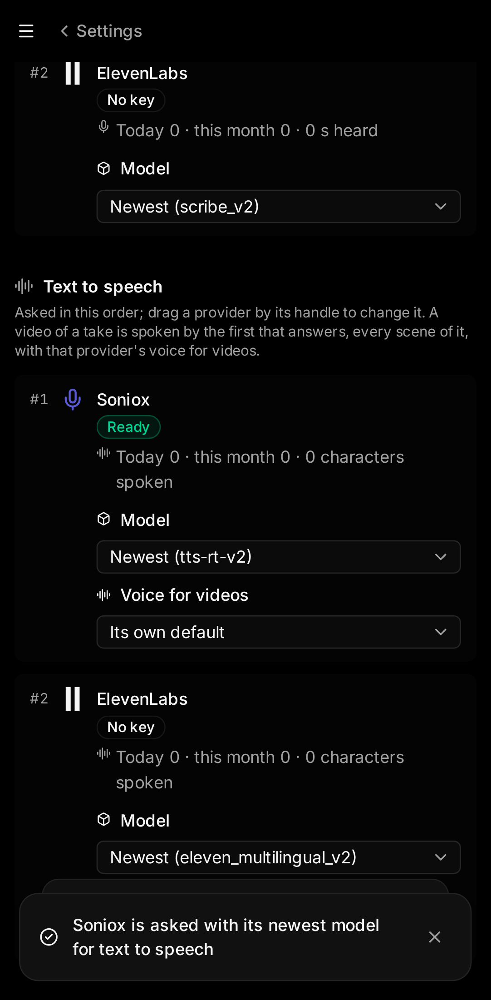
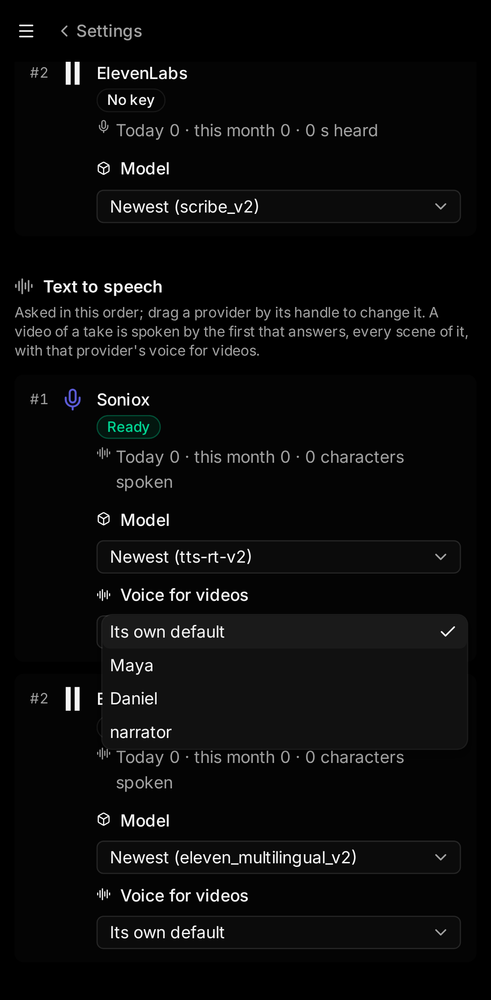
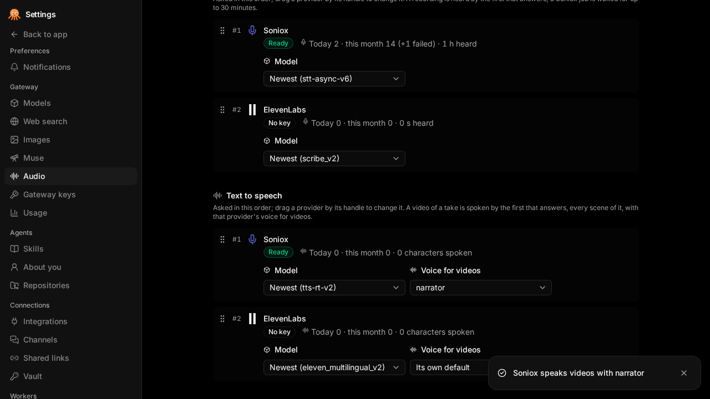
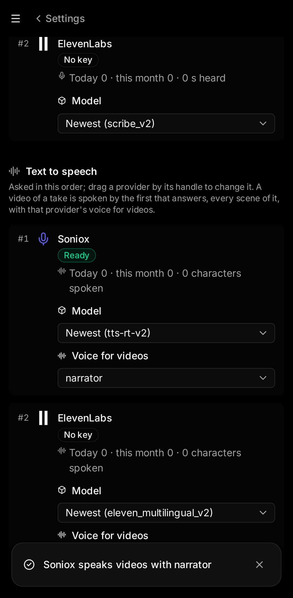
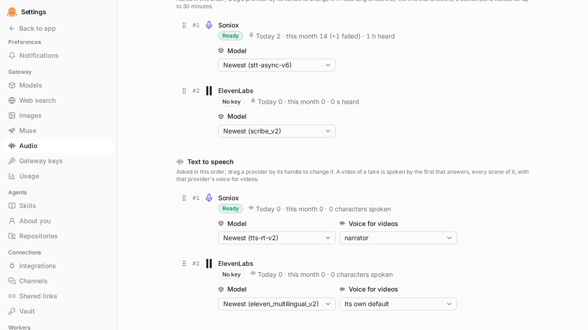
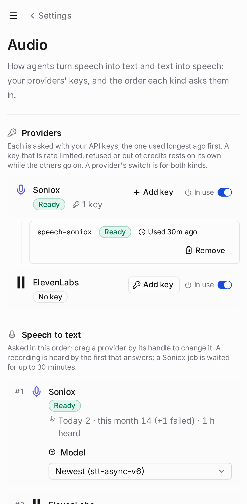

Issue #1285: Settings → Audio, model choices and the voice picker by name
Playwright shots of web/tests/audio.spec.ts against the fake client API, desktop and phone (Pixel 7), dark and light.
Model per kind (newest by default, then Soniox's catalog)

desktop, dark, list open

phone, dark, list open
 desktop, light, list open
desktop, light, list open

phone, light, list open

desktop, dark, back on the newest

phone, dark
Voice for videos, by name (built-in and cloned Soniox voices)
 desktop, dark, list open (Soniox's voices only)
desktop, dark, list open (Soniox's voices only)

phone, dark, list open

desktop, dark, "narrator" (a cloned voice) chosen

phone, dark

desktop, light, after reload: shown by name
 phone, light
phone, light
The whole page
 desktop, dark
desktop, dark
 phone, dark
phone, dark
 desktop, light
desktop, light

phone, light